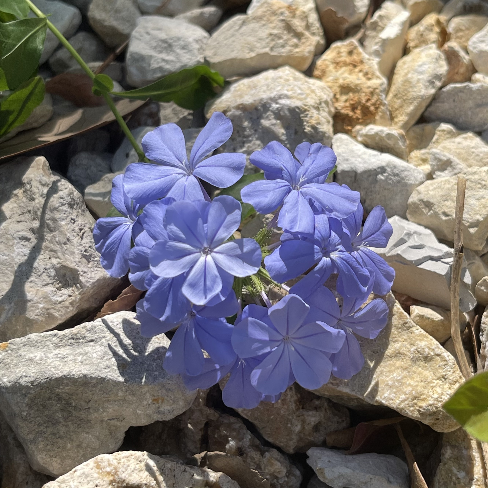

Cape Plumbago
Brush Script MT
Robert E. Smith
With origins in South Africa, the colorful flowers of the cape plumbago bloom quickly and consistently throughout much of the year, which makes them popular for gardening.
The calligraphic yet ordered nature of Brush Script makes it a common choice for an elegant font that mimics handwriting, much like the beauty of the plumbago flowers for gardens.